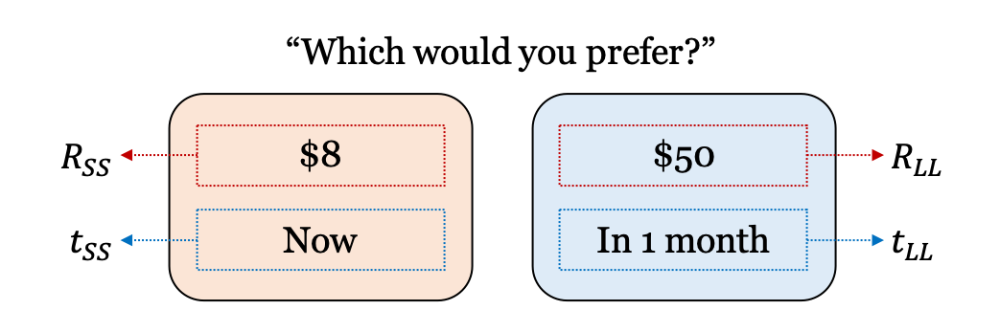

Delay discounting task

Overview of the delay discounting task.
1. Initialization
1) Task: Delay discounting task
Design variables
t_ss(\(t_{SS}\)): Delay for the SS (smaller, sooner) optiont_ll(\(t_{LL}\)): Delay for the LL (larger, later) optionThe delay on SS option should be sooner than that of LL option (\(t_{SS} < t_{LL}\)).
r_ss(\(R_{SS}\)): Reward value for the SS (smaller, sooner) optionr_ll(\(R_{LL}\)): Reward value for the LL (larger, later) optionThe reward on SS option should be smaller than that of LL option (\(R_{SS} < R_{LL}\)).
Possible responses:
choice:0(SS option),1(LL option)
[1]:
from adopy.tasks.dd import TaskDD
task = TaskDD()
[2]:
task.name
[2]:
'Delay discounting task'
[3]:
task.designs
[3]:
['t_ss', 't_ll', 'r_ss', 'r_ll']
[4]:
task.responses
[4]:
['choice']
2) Model: Hyperbolic model (Mazur, 1987)
Model parameters
k(\(k\)): discounting rate parametertau(\(\tau\)): inverse temperature
[5]:
from adopy.tasks.dd import ModelHyp
model = ModelHyp()
[6]:
model.name
[6]:
'Hyperbolic model for the DD task'
[7]:
model.params
[7]:
['k', 'tau']
3) Grid definition
Grid for design variables
[8]:
import numpy as np
grid_design = {
# [Now]
't_ss': [0],
# [3 days, 5 days, 1 week, 2 weeks, 3 weeks,
# 1 month, 6 weeks, 2 months, 10 weeks, 3 months,
# 4 months, 5 months, 6 months, 1 year, 2 years,
# 3 years, 5 years, 10 years] in a weekly unit
't_ll': [0.43, 0.714, 1, 2, 3,
4.3, 6.44, 8.6, 10.8, 12.9,
17.2, 21.5, 26, 52, 104,
156, 260, 520],
# [$12.5, $25, ..., $775, $787.5]
'r_ss': np.arange(12.5, 800, 12.5),
# [$800]
'r_ll': [800]
}
Grid for model parameters
[9]:
grid_param = {
# 50 points on [10^-5, ..., 1] in a log scale
'k': np.logspace(-5, 0, 50, base=10),
# 10 points on (0, 5] in a linear scale
'tau': np.linspace(0, 5, 11)[1:]
}
Grid for response variables
[10]:
grid_response = {
'choice': [0, 1]
}
4) Engine initialization
[11]:
from adopy import Engine
engine = Engine(task, model, grid_design, grid_param, grid_response)
[12]:
# Posterior means (k, tau)
engine.post_mean
[12]:
k 0.095512
tau 2.750002
Name: Posterior mean, dtype: float32
[13]:
# Standard deviations for the posterior distribution (k, tau)
engine.post_sd
[13]:
k 0.210282
tau 1.436141
Name: Posterior SD, dtype: float32
2. Design comparison
ADO design
Fixed design (Green & Myerson, 2004)
The staircase method runs 6 trials for each delay to estimate the discounting rate. While \(t_{SS}\) is fixed to 0, it starts with \(R_{SS}\) of \$400 and \(R_{LL}\) of \$800. If a participant chooses the SS option, the staircase method increases \(R_{SS}\) by 50%; if the participant chooses the LL option, it decreases \(R_{SS}\) by 50%. After repeating this 5 times, it proceeds to another delay value.
Random design
[14]:
N_TRIAL = 42
[15]:
# 1 week, 2 weeks, 1 month, 6 months, 1 year, 2 years, 10 years
D_CAND = [1, 2, 4.3, 26, 52, 104, 520]
# DELTA_R_SS for the staircase method:
# The amount of changes on R_SS every 6 trials.
DELTA_R_SS = [400, 200, 100, 50, 25, 12.5]
Functions
Simulate a response
[16]:
# True parameter values to simulate responses
PARAM_TRUE = {'k': 0.12, 'tau': 1.5}
[17]:
from scipy.stats import bernoulli
def get_simulated_response(design):
# Calculate the probability to choose a variable option
t_ss, t_ll, r_ss, r_ll = (
design['t_ss'], design['t_ll'],
design['r_ss'], design['r_ll']
)
k, tau = PARAM_TRUE['k'], PARAM_TRUE['tau']
u_ss = r_ss * (1. / (1 + k * t_ss))
u_ll = r_ll * (1. / (1 + k * t_ll))
p_obs = 1. / (1 + np.exp(-tau * (u_ll - u_ss)))
# Randomly sample a binary choice response from Bernoulli distribution
return bernoulli.rvs(p_obs)
Simulation
[18]:
import pandas as pd
# Make an empty DataFrame to store data
columns = ['design_type', 'trial', 'mean_k', 'mean_tau', 'sd_k', 'sd_tau']
df_simul = pd.DataFrame(None, columns=columns)
# Run simulations for three designs
for design_type in ['ADO', 'staircase', 'random']:
# Reset the engine as an initial state
engine.reset()
d_staircase = D_CAND
np.random.shuffle(d_staircase)
for i in range(N_TRIAL):
# Design selection / optimization
if design_type == 'ADO':
design = engine.get_design('optimal')
elif design_type == 'staircase':
if i % 6 == 0:
design = {
't_ss': 0,
't_ll': d_staircase[i // 6],
'r_ss': 400,
'r_ll': 800
}
else:
if response == 1:
design['r_ss'] += DELTA_R_SS[i % 6]
else:
design['r_ss'] -= DELTA_R_SS[i % 6]
else: # design_type == 'random'
design = engine.get_design('random')
# Experiment
response = get_simulated_response(design)
# Bayesian updating
engine.update(design, response)
# Save the information for updated posteriors
df_simul = df_simul.append({
'design_type': design_type,
'trial': i + 1,
'mean_k': engine.post_mean[0],
'mean_tau': engine.post_mean[1],
'sd_k': engine.post_sd[0],
'sd_tau': engine.post_sd[1],
}, ignore_index=True)
Results
[19]:
%matplotlib inline
%config InlineBackend.figure_format = 'retina'
from matplotlib import pyplot as plt
fig, ax = plt.subplots(1, 2, figsize = [10, 4])
# Draw black dotted lines for true parameters
for i, param in enumerate(['k', 'tau']):
ax[i].axhline(PARAM_TRUE[param], color='black', linestyle=':')
for i, design_type in enumerate(['ADO', 'staircase', 'random']):
df_cond = df_simul.loc[df_simul['design_type'] == design_type]
line_color = ['blue', 'green', 'red'][i]
ax = df_cond.plot(x='trial', y=['mean_k', 'mean_tau'], ax=ax,
subplots=True, legend=False, color = line_color, alpha = 0.7)
# Set titles and limits on y axes.
ax[0].set_title('$k$ (Discounting rate)')
ax[1].set_title('$\\tau$ (Inverse temperature)')
ax[0].legend(['True value', 'ADO', 'Staircase', 'Random'])
ax[1].legend(['True value', 'ADO', 'Staircase', 'Random'])
plt.show()
References
Green, L. & Myerson, J. (2004). A discounting framework for choice with delayed and probabilistic rewards. Psychological Bulletin, 130, 769–792.
Mazur, J. E. (1987). An adjusting procedure for studying delayed reinforcement. Commons, ML.; Mazur, JE.; Nevin, JA, 55–73.